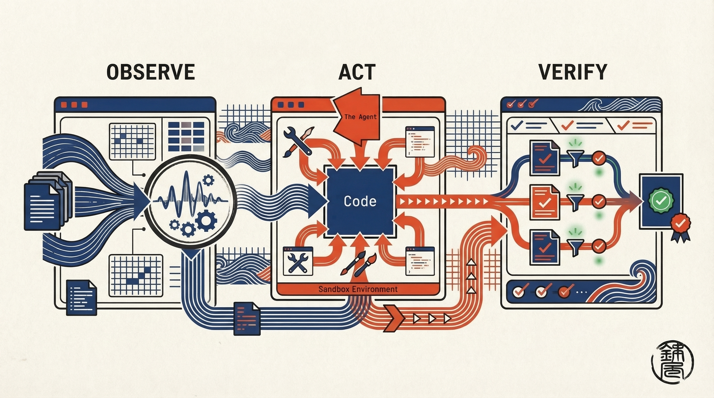

The Vocabulary of
Action.
Every command follows the same shape: weaver <domain> <operation> [ARG ...]. Three domains — Observe, Act, and Verify — cover perception, mutation, and validation respectively.
Core Capabilities
| Domain | Purpose | Key Operations | Output |
|---|---|---|---|
| observe | Query code structure and relationships via LSP and Tree-sitter. | get-definition, find-references, call-hierarchy, grep |
JSONL (kind envelope)
|
| act | Lock-guarded, transactional code mutation via patches or rewrites. | apply-patch, apply-rewrite, refactor |
JSONL (kind envelope)
|
| verify | Pull diagnostics from language servers to confirm code health. | diagnostics |
JSONL (kind envelope)
|
Observe
perception
The agent's eyes. Queries code structure via LSP and Tree-sitter — definitions, references, call hierarchies, structural grep.
$ weaver observe get-definition \
--uri file:///src/main.rs --position 10:5
Act
mutation
The agent's hands. Applies patches and rewrites through Double-Lock validation — every edit passes syntactic and semantic checks before it touches disk.
$ weaver act apply-patch < fix.diff
Verify
validation
The agent's conscience. Currently pulls LSP diagnostics for any file with a supported language server. Policy and test orchestration are planned, not implemented yet.
$ weaver verify diagnostics \
--uri file:///src/lib.rs
End-to-End Pipeline
How an agent typically chains commands to safely refactor code.

Observe Context
Agent jumps to the definition of process_data to understand it before editing.
--uri file:///src/main.rs --position 10:5
// JSONL output
{"kind":"stream","stream":"stdout","data":"[{\"uri\":\"file:///src/lib.rs\",\"line\":42,\"column\":17}]\n"}
{"kind":"exit","status":0}
Apply Patch
Agent pipes a diff through Double-Lock validation and onto disk.
// JSONL output
{"kind":"stream","stream":"stdout","data":"{\"applied\":true,\"files\":[\"src/lib.rs\"]}\n"}
{"kind":"exit","status":0}
Verify Diagnostics
Agent confirms the edited file has no compiler warnings or errors.
--uri file:///src/lib.rs
// JSONL output — no diagnostics, clean file
{"kind":"stream","stream":"stdout","data":"{\"diagnostics\":[]}\n"}
{"kind":"exit","status":0}
Global Flags
Keep command semantics on this page. Keep config defaults, override precedence, and the JSONL envelope in the docs hub.
| --output | Output mode: auto (default), human, or json. auto selects human on a TTY, json when redirected. Must appear before the domain/operation. |
| --config-path | Path to an explicit weaver.toml configuration file. |
| --daemon-socket | Override daemon transport (e.g. unix:///run/user/1000/weaver.sock). |
| --log-filter | Tracing filter (default info). |
| --log-format | Log output format: json (default) or compact. |
| --capability-overrides | Capability overrides. See the override syntax in the docs hub before repeating directives on the CLI. |
Exit Codes
| 0 | Success. Command completed without error. |
| 1 | General error (file not found, permission denied). |
| 126 | Command invoked cannot execute (sandbox restriction). |
| 130 | Terminated by signal (Ctrl-C). |
Capability Discovery & Output
This page keeps the command map. The authoritative defaults, override syntax, and JSONL envelope live in the docs hub so those details only drift in one place.
Capability probe
Run weaver --capabilities to inspect the negotiated capability surface. The full output shape and override syntax are documented in the docs hub.
Output modes
--output auto stays the default. Use human for operator context and json for piping. The exact JSONL envelope is maintained in the docs hub.
Failure shape
Capability mismatches still return structured failures with actionable hints. Keep the exact wire contract centralized so command docs can focus on operator intent.
CLI Help & Discoverability
PlannedUpcoming help surfaces will make the CLI self-documenting without requiring external runbooks or source inspection.
| Command | Behaviour |
|---|---|
| weaver --help | Lists all three domains and every operation for each, plus global options and a quick-start example. Does not require a running daemon. |
| weaver <domain> | Without an operation, prints available operations for that domain and a follow-up --help hint. |
| weaver <domain> <op> --help | Operation-level help with required arguments, examples, and exit codes. |
| weaver --version | Prints the version string and exits. |
Actionable Errors
Invalid domains will list all valid alternatives. Unknown operations will suggest the nearest match by edit distance. All error paths will follow a three-part template: problem statement, valid alternatives, and an explicit next command.